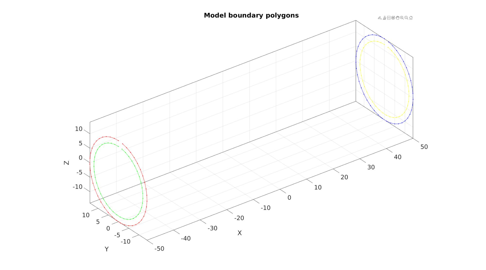
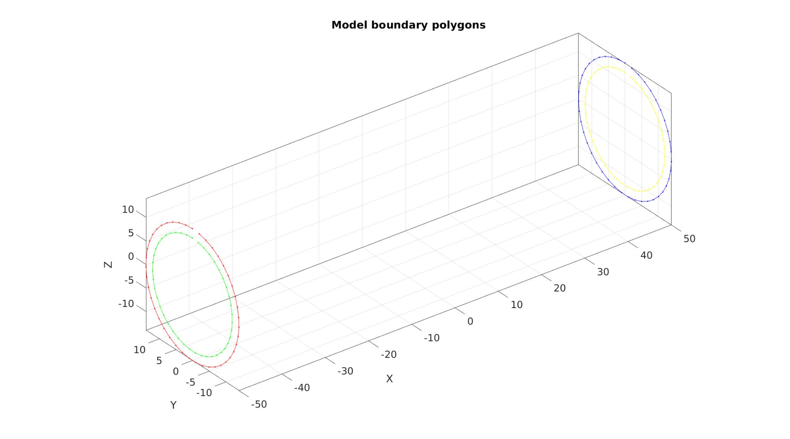
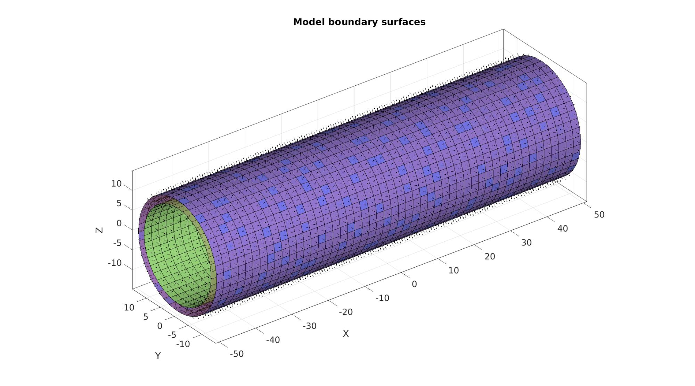
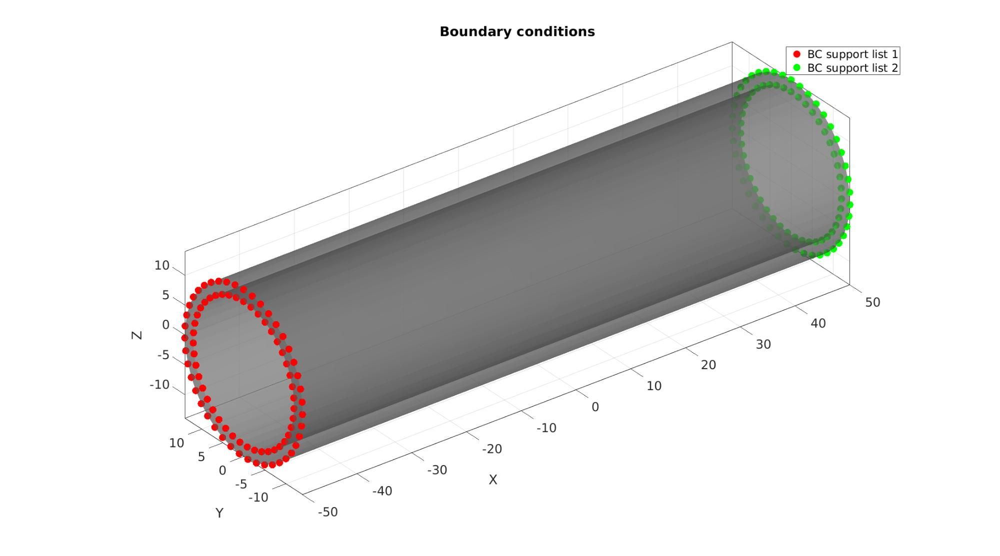

DEMO_febio_0020_vessel_balloon_inflate
Below is a demonstration for:
- Building geometry for a cylindrical vessel with tetrahedral elements
- Defining the boundary conditions
- Coding the febio structure
- Running the model
- Importing and visualizing the displacement results
Contents
- Keywords
- Plot settings
- Control parameters
- Creating model boundary polygons
- Creating model boundary surfaces
- Defining the boundary conditions
- Create node set for a ring at the centre
- Setup structure to define an Abaqus inp file
- Run the job using Abaqus
- Creating the INP file
- Run the job using Abaqus
- Import and visualize abaqus results
- Calculate segment area change as a function of time and pressure
Keywords
- febio_spec version 2.5
- febio, FEBio
- vessel, cylinder, balloon
- prescribed displacement
- contact, sliding
- hexahedral elements, hex8
- tube, cylindrical
- static, solid, multistep
- hyperelastic, Ogden
- displacement logfile
- stress logfile
clear; close all; clc;
Plot settings
fontSize=20; faceAlpha1=0.8; markerSize=40; lineWidth=3;
Control parameters
% Path names defaultFolder = fileparts(fileparts(mfilename('fullpath'))); savePath=fullfile(defaultFolder,'data','temp'); % Defining file names abaqusInpFileNamePart='tempModel'; abaqusInpFileName=fullfile(savePath,[abaqusInpFileNamePart,'.inp']); %INP file name abaqusDATFileName=fullfile(savePath,[abaqusInpFileNamePart,'.dat']); %DAT file name %Specifying geometry parameters vessel (mm)*** pointSpacing=2; radiusOuter1=14; radiusInner1=12; radiusOuter2=14; radiusInner2=12; vesselLength=100; %Loads pressureValue=5e-3; %Material materialName='Ogden'; kFactor=25; muOgden_1=0.06/2; alphaOgden_1=36; k=muOgden_1*kFactor; D1=2/k; a=2; %Time stepping settings numTimeSteps=20; totalTime=1; timeStepInitial=totalTime/numTimeSteps; timeStepMinimum=timeStepInitial/100; timeStepMaximum=timeStepInitial;
Creating model boundary polygons
nRad=round((2*pi*max([radiusOuter1 radiusOuter2]))/pointSpacing); %Number of radial steps t=linspace(0,2*pi,nRad)'; %Angles t=t(1:end-1); %take away last which equals start v1_Outer=[-(vesselLength/2)*ones(size(t)) radiusOuter1*sin(t) radiusOuter1*cos(t)]; %Circular coordinates t=linspace(0,2*pi,nRad)'; %Angles t=t(1:end-1); %take away last which equals start v2_Outer=[(vesselLength/2)*ones(size(t)) radiusOuter2*sin(t) radiusOuter2*cos(t)]; %Circular coordinates t=linspace(0,2*pi,nRad)'; %Angles t=t(1:end-1); %take away last which equals start v1_Inner=[-(vesselLength/2)*ones(size(t)) radiusInner1*sin(t) radiusInner1*cos(t)]; %Circular coordinates t=linspace(0,2*pi,nRad)'; %Angles t=t(1:end-1); %take away last which equals start v2_Inner=[(vesselLength/2)*ones(size(t)) radiusInner2*sin(t) radiusInner2*cos(t)]; %Circular coordinates
Plotting model boundary polygons
cFigure; hold on; title('Model boundary polygons','FontSize',fontSize); plotV(v1_Outer,'r.-') plotV(v1_Inner,'g.-') plotV(v2_Outer,'b.-') plotV(v2_Inner,'y.-') axisGeom(gca,fontSize); drawnow;
Creating model boundary surfaces
numSteps=round(vesselLength/pointSpacing); numSteps=numSteps + iseven(numSteps); controlStructLoft.numSteps=ceil(vesselLength./pointSpacing); controlStructLoft.closeLoopOpt=1; controlStructLoft.patchType='quad'; controlStructLoft.numSteps=numSteps; %Meshing outer surface [F1,V1,indStart1,indEnd1]=polyLoftLinear(v1_Outer,v2_Outer,controlStructLoft); %Meshing inner surface [F2,V2,indStart2,indEnd2]=polyLoftLinear(v1_Inner,v2_Inner,controlStructLoft); %Compose hexahedral elements indStart2=indStart2+size(V1,1); indEnd2=indEnd2+size(V1,1); F2=F2+size(V1,1); ET=[F1 F2]; %hexahedral elements VT=[V1;V2]; %Nodes [FT]=element2patch(ET,[],'hex8'); indBoundary=tesBoundary(FT); Fb=FT(indBoundary,:);
Plotting model boundary surfaces
cFigure; hold on; title('Model boundary surfaces','FontSize',fontSize); gpatch(Fb,VT,'rw','none',0.25); patchNormPlot(FT,VT); gpatch(F1,VT,'bw'); patchNormPlot(F1,VT); gpatch(F2,VT,'gw'); patchNormPlot(F2,VT); colormap(gca,gjet(4)); % icolorbar; axisGeom(gca,fontSize); camlight headlight; drawnow;

Defining the boundary conditions
The visualization of the model boundary shows colors for each side of the cube. These labels can be used to define boundary conditions.
%Define X supported node set bcSupportList_1=unique([indStart1(:);indStart2(:)]); %Node set part of selected face bcSupportList_2=unique([indEnd1(:);indEnd2(:)]); %Node set part of selected face indNodesFix=[bcSupportList_1(:); bcSupportList_2(:)]; % %Define Y supported node set % bcSupportList_Y=unique(Fb(Cb==4,:)); %Node set part of selected face
Visualizing boundary conditions. Markers plotted on the semi-transparent model denote the nodes in the various boundary condition lists.
cFigure; title('Boundary conditions','FontSize',fontSize); hold on; gpatch(Fb,VT,'kw','none',0.5); hl(1)=plotV(VT(bcSupportList_1,:),'r.','MarkerSize',markerSize); hl(2)=plotV(VT(bcSupportList_2,:),'g.','MarkerSize',markerSize); legend(hl,{'BC support list 1','BC support list 2'}); axisGeom(gca,fontSize); camlight headlight; drawnow;

Visualizing boundary conditions. Markers plotted on the semi-transparent model denote the nodes in the various boundary condition lists.
cFigure; title('Pressure surface','FontSize',fontSize); hold on; gpatch(Fb,VT,'kw','none',0.5); clear hl; hl(1)=gpatch(F2,VT,'rw','k',1); legend(hl,{'Pressure surface'}); axisGeom(gca,fontSize); camlight headlight; drawnow;

indicesNodesInner=unique(F2(:));
indicesElementsInner=1:1:size(ET,1); %find(any(ismember(ET,indicesNodesInner),2));
FT_inner=ET(:,5:8);
Visualizing inner surface
cFigure; title('Pressure surface','FontSize',fontSize); hold on; gpatch(Fb,VT,'kw','none',0.5); clear hl; hl(1)=gpatch(FT_inner,VT,'rw','k',1); legend(hl,{'Pressure surface'}); axisGeom(gca,fontSize); camlight headlight; drawnow;


Create node set for a ring at the centre
logicLeft=VT(:,1)<=(0+eps(0)); logicLeftFaces=all(logicLeft(F2),2); F2_left=F2(logicLeftFaces,:); Eb_left=patchBoundary(F2_left); X=VT(:,1); X_Eb_left=X(Eb_left); logicKeep=all(X_Eb_left>=(0-eps(0)),2); E_segment=Eb_left(logicKeep,:); indSegment=edgeListToCurve(E_segment); %Convert to curve indSegment=indSegment(1:end-1); %Remove double end point segmentCurve_cell={indSegment};
cFigure; title('Middle segment for analysis','FontSize',fontSize); hold on; gpatch(Fb,VT,'kw','none',0.5); % gpatch(F2_left,VT,'rw','k',1); clear hl; hl(1)=plotV(VT(indSegment,:),'b.-','LineWidth',3,'MarkerSize',25); legend(hl,{'Segment of interest'}); axisGeom(gca,fontSize); camlight headlight; drawnow;
Setup structure to define an Abaqus inp file
%%--> Heading abaqus_spec.Heading.COMMENT{1}='Job name: AORTA'; abaqus_spec.Heading.COMMENT{2}='Generated by: GIBBON'; %%--> Preprint abaqus_spec.Preprint.ATTR.echo='NO'; abaqus_spec.Preprint.ATTR.model='NO'; abaqus_spec.Preprint.ATTR.history='NO'; abaqus_spec.Preprint.ATTR.contact='NO'; %--> Part partName='Aorta'; % Node nodeIds=(1:1:size(VT,1))'; abaqus_spec.Part.COMMENT='This section defines the part geometry in terms of nodes and elements'; abaqus_spec.Part.ATTR.name=partName; abaqus_spec.Part.Node={nodeIds,VT}; % Element elementIds=(1:1:size(ET,1))'; abaqus_spec.Part.Element{1}.ATTR.type='C3D8';%'C3D8R'; abaqus_spec.Part.Element{1}.VAL={elementIds,ET}; % Element sets abaqus_spec.Part.Elset{1}.ATTR.elset='Set-1'; abaqus_spec.Part.Elset{1}.VAL=elementIds(:)'; surfaceElementSetName='elementSetInnerSurface'; abaqus_spec.Part.Elset{2}.ATTR.elset=surfaceElementSetName; abaqus_spec.Part.Elset{2}.ATTR.internal=''; %Remains hidden uppon import abaqus_spec.Part.Elset{2}.VAL=indicesElementsInner(:)'; % Surfaces sidePick=2; innerSurfaceName=[surfaceElementSetName,'_side',num2str(sidePick)]; abaqus_spec.Part.Surface{1}.ATTR.type='ELEMENT'; abaqus_spec.Part.Surface{1}.ATTR.name=innerSurfaceName; abaqus_spec.Part.Surface{1}.VAL={surfaceElementSetName,['S',num2str(sidePick)]}; % Sections abaqus_spec.Part.Solid_section.ATTR.elset='Set-1'; abaqus_spec.Part.Solid_section.ATTR.material=materialName; %--> Assembly instanceName='Aorta-assembly'; abaqus_spec.Assembly.ATTR.name='Assembly-1'; abaqus_spec.Assembly.Instance.ATTR.name=instanceName; abaqus_spec.Assembly.Instance.ATTR.part='Aorta'; abaqus_spec.Assembly.Nset{1}.ATTR.nset='Set-1'; abaqus_spec.Assembly.Nset{1}.ATTR.instance=instanceName; abaqus_spec.Assembly.Nset{1}.VAL=indicesNodesInner(:)'; %Add segment curve node sets for q=1:1:numel(segmentCurve_cell) indNow=numel(abaqus_spec.Assembly.Nset)+1; abaqus_spec.Assembly.Nset{indNow}.ATTR.nset=['Set-',num2str(indNow)]; abaqus_spec.Assembly.Nset{indNow}.ATTR.instance=instanceName; abaqus_spec.Assembly.Nset{indNow}.VAL=segmentCurve_cell{q}; end %Add fix node set indNow=numel(abaqus_spec.Assembly.Nset)+1; setNameFix=['Set-',num2str(indNow)]; abaqus_spec.Assembly.Nset{indNow}.ATTR.nset=setNameFix; abaqus_spec.Assembly.Nset{indNow}.ATTR.instance=instanceName; abaqus_spec.Assembly.Nset{indNow}.VAL=indNodesFix(:)'; %Add output node set outputNodeSetName='all'; abaqus_spec.Assembly.Nset{5}.ATTR.nset=outputNodeSetName; abaqus_spec.Assembly.Nset{5}.ATTR.instance=instanceName; abaqus_spec.Assembly.Nset{5}.VAL=1:1:size(VT,1); % Create assembly level element set for surface surfaceElementSetName='elementSetInnerSurface'; abaqus_spec.Assembly.Elset{1}.ATTR.elset=surfaceElementSetName; abaqus_spec.Assembly.Elset{1}.ATTR.internal=''; %Remains hidden uppon import abaqus_spec.Assembly.Elset{1}.ATTR.instance=instanceName; abaqus_spec.Assembly.Elset{1}.VAL=indicesElementsInner(:)'; % Create assembly level surface from element set sidePick=2; innerSurfaceName=[surfaceElementSetName,'_side',num2str(sidePick)]; abaqus_spec.Assembly.Surface{1}.ATTR.type='ELEMENT'; abaqus_spec.Assembly.Surface{1}.ATTR.name=innerSurfaceName; abaqus_spec.Assembly.Surface{1}.VAL={surfaceElementSetName,['S',num2str(sidePick)]}; %%--> Material abaqus_spec.Material.ATTR.name=materialName; % abaqus_spec.Material.Hyperelastic.VAL=[muOgden_1 alphaOgden_1 D1]; %Single term Ogden abaqus_spec.Material.Hyperelastic.VAL=[muOgden_1 alphaOgden_1 muOgden_1 -alphaOgden_1 D1 D1]; %Two term Ogden abaqus_spec.Material.Hyperelastic.ATTR.n=2; abaqus_spec.Material.Hyperelastic.ATTR.ogden=''; %%--> Step abaqus_spec.Step.ATTR.name='Step-1'; abaqus_spec.Step.ATTR.nlgeom='YES'; abaqus_spec.Step.Static=[timeStepInitial totalTime timeStepMinimum timeStepMaximum]; % Boundary setNameFix=abaqus_spec.Assembly.Nset{indNow}.ATTR.nset; abaqus_spec.Step.Boundary{1}.VAL={setNameFix,[1,1]}; abaqus_spec.Step.Boundary{2}.VAL={setNameFix,[2,2]}; abaqus_spec.Step.Boundary{3}.VAL={setNameFix,[3,3]}; % Loads % ** LOADS % ** % ** Name: Load-1 Type: Pressure % *Dsload % Surf-1, P, 0.00533 % ** abaqus_spec.Step.Dsload{1}.VAL={innerSurfaceName,'P',pressureValue}; %Output abaqus_spec.Step.Restart.ATTR.write=''; abaqus_spec.Step.Restart.ATTR.frequency=0; abaqus_spec.Step.Output{1}.ATTR.field=''; abaqus_spec.Step.Output{1}.ATTR.variable='PRESELECT'; abaqus_spec.Step.Output{2}.ATTR.history=''; abaqus_spec.Step.Output{2}.ATTR.variable='PRESELECT'; abaqus_spec.Step.Node_print.ATTR.nset=outputNodeSetName; abaqus_spec.Step.Node_print.ATTR.frequency = 1; abaqus_spec.Step.Node_print.VAL='COORD'; abaqus_spec.Step.El_print.VAL='S';
Run the job using Abaqus
lockFileName=fullfile(savePath,[abaqusInpFileNamePart,'.lck']); if exist(lockFileName,'file') warning('Lockfile found and deleted') delete(lockFileName); end
Creating the INP file
You can use abaqusStruct2inp to write the structure data to a file.
abaqusStruct2inp(abaqus_spec,abaqusInpFileName);
Run the job using Abaqus
lockFileName=fullfile(savePath,[abaqusInpFileNamePart,'.lck']); if exist(lockFileName,'file') warning('Lockfile found and deleted') delete(lockFileName); end
oldPath=pwd; %Get current working directory cd(savePath); %Set new working directory to match save patch abaqusPath='abaqus';%'/usr/bin/abaqus'; %Abaqus excute command or path runFlag=system([abaqusPath,' inp=',abaqusInpFileName,' job=',abaqusInpFileNamePart,' interactive ask_delete=OFF']); cd(oldPath); %Restore working directory
/bin/bash: line 1: abaqus: command not found
Import and visualize abaqus results
Importing the abaqus .dat file
[abaqusData]=importAbaqusDat(abaqusDATFileName);
Error using textscan Invalid file identifier. Use fopen to generate a valid file identifier. Error in txtfile2cell (line 16) T=textscan(fid,'%s','delimiter', '\n','Whitespace',''); Error in importAbaqusDat (line 61) T=txtfile2cell(fileName); Error in DEMO_abaqus_0003_cylinder_inflate (line 430) [abaqusData]=importAbaqusDat(abaqusDATFileName);
Plotting the simulated results using anim8 to visualize and animate deformations
%Getting final nodal coordinates V_def=[abaqusData.STEP(1).INCREMENT(end).nodeOutput.data.COOR1... abaqusData.STEP(1).INCREMENT(end).nodeOutput.data.COOR2... abaqusData.STEP(1).INCREMENT(end).nodeOutput.data.COOR3]; U=V_def-VT; %Displacements colorDataVertices=sqrt(sum(U.^2,2)); %Displacement magnitude data for all vertices colorDataFaces=vertexToFaceMeasure(Fb,colorDataVertices); %Same for selection of faces timeVec=[0 abaqusData.STEP(1).INCREMENT(:).TOTAL_TIME_COMPLETED]; % Get limits for plotting minV=min([VT;V_def],[],1); %Minima maxV=max([VT;V_def],[],1); %Maxima indSegmentPlot=[indSegment(:);indSegment(1)]; % Create basic view and store graphics handle to initiate animation hf=cFigure; %Open figure hold on; gtitle([abaqusInpFileNamePart,': Press play to animate']); hp=gpatch(Fb,V_def,colorDataFaces,'none',0.5); %Add graphics object to animate hp2=plotV(V_def(indSegmentPlot,:),'k-','LineWidth',3,'MarkerSize',25); % gpatch(Fb,VT,0.5*ones(1,3),'none',0.25); %A static graphics object axisGeom(gca,fontSize); colormap(gjet(250)); colorbar; % caxis([0 max(colorDataVertices)]); axis([minV(1) maxV(1) minV(2) maxV(2) minV(3) maxV(3)]); %Set axis limits statically view(130,25); %Set view direction camlight headlight; % Set up animation features animStruct.Time=timeVec; %The time vector for qt=1:1:numel(timeVec) %Loop over time increments if qt>1 V_def=[abaqusData.STEP(1).INCREMENT(qt-1).nodeOutput.data.COOR1... abaqusData.STEP(1).INCREMENT(qt-1).nodeOutput.data.COOR2... abaqusData.STEP(1).INCREMENT(qt-1).nodeOutput.data.COOR3]; else V_def=VT; end U=V_def-VT; %Displacements colorDataVertices=sqrt(sum(U.^2,2)); %Displacement magnitude data for all vertices colorDataFaces=vertexToFaceMeasure(Fb,colorDataVertices); %Same for selection of faces %Set entries in animation structure animStruct.Handles{qt}=[hp hp hp2 hp2 hp2]; %Handles of objects to animate animStruct.Props{qt}={'Vertices','CData','XData','YData','ZData'}; %Properties of objects to animate animStruct.Set{qt}={V_def,colorDataFaces,V_def(indSegmentPlot,1),V_def(indSegmentPlot,2),V_def(indSegmentPlot,3)}; %Property values for to set in order to animate end anim8(hf,animStruct); %Initiate animation feature drawnow;
Calculate segment area change as a function of time and pressure
nIncrements=numel(abaqusData.STEP(1).INCREMENT); p=linspace(0,pressureValue,nIncrements+1); A=NaN(size(p)); for qt=1:1:numel(timeVec) %Loop over time increments if qt>1 V_def=[abaqusData.STEP(1).INCREMENT(qt-1).nodeOutput.data.COOR1... abaqusData.STEP(1).INCREMENT(qt-1).nodeOutput.data.COOR2... abaqusData.STEP(1).INCREMENT(qt-1).nodeOutput.data.COOR3]; else V_def=VT; end A(qt)=patch_area(1:1:numel(indSegmentPlot),V_def(indSegmentPlot,:)); end
cFigure; subplot(1,2,1); hl(1)=plot(timeVec,p,'b.-','LineWidth',3,'MarkerSize',25); hLegend=legend(hl,{'time vs pressure'},'FontSize',fontSize); hLegend.Location='NorthWest'; set(gca,'FontSize',fontSize); grid on; subplot(1,2,2); hl(1)=plot(p,A,'r.-','LineWidth',3,'MarkerSize',25); hLegend=legend(hl,{'pressure vs area'},'FontSize',fontSize); hLegend.Location='NorthWest'; set(gca,'FontSize',fontSize); grid on; drawnow;

GIBBON www.gibboncode.org
Kevin Mattheus Moerman, gibbon.toolbox@gmail.com
GIBBON footer text
License: https://github.com/gibbonCode/GIBBON/blob/master/LICENSE
GIBBON: The Geometry and Image-based Bioengineering add-On. A toolbox for image segmentation, image-based modeling, meshing, and finite element analysis.
Copyright (C) 2006-2022 Kevin Mattheus Moerman and the GIBBON contributors
This program is free software: you can redistribute it and/or modify it under the terms of the GNU General Public License as published by the Free Software Foundation, either version 3 of the License, or (at your option) any later version.
This program is distributed in the hope that it will be useful, but WITHOUT ANY WARRANTY; without even the implied warranty of MERCHANTABILITY or FITNESS FOR A PARTICULAR PURPOSE. See the GNU General Public License for more details.
You should have received a copy of the GNU General Public License along with this program. If not, see http://www.gnu.org/licenses/.